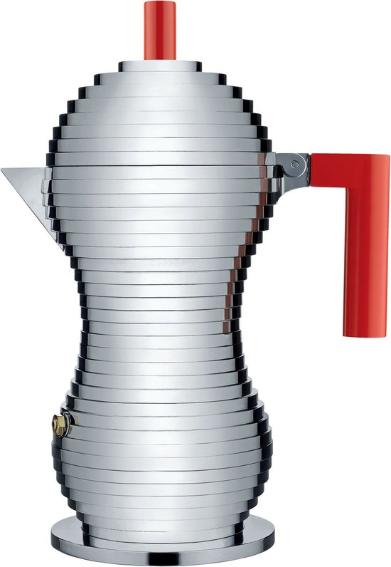

Our scores
- Design & build quality9.0/10
- Coffee taste9.0/10
- Ease of use9.0/10
- Maintenance8.0/10
- Value for money8.0/10
Verdict
A remarkable moka pot that combines technique and design: less bitter coffee, full body, easy to use and better finished than entry-level models. An excellent choice if you value taste as much as aesthetics, without going to the most expensive segment.
The Alessi Pulcina is perhaps the most striking moka pot you can place on a hob. Michele De Lucchi's layered silhouette immediately catches the eye, but behind this spectacular design also lies a technical idea: designed with the illy laboratory, the Pulcina is intended to stop the flow just before the coffee becomes bitter.
The result: an espresso-style coffee that is noticeably less bitter than many classic moka pots, while retaining the typical strength and body.
Design & build quality
The Pulcina is die-cast aluminium with a "chick's beak" spout (pulcina = little chick), designed to pour without dripping. The handle and knob are heat-resistant plastic, usually red or black, creating a strong contrast with the metal.
Different versions exist:
- 1, 3 and 6 cups (espresso cups of approximately 1 oz / 30 ml each);
- aluminium versions for gas/electric hobs;
- an induction variant with a magnetic base and a double-filter version allowing both espresso and a lighter "americano" style coffee.
Build quality is described as solid and well-finished: heavy aluminium body, well-fitting parts, robust handle. It is an object that looks even more impressive in person than in photos.
Coffee quality: less bitter, full body
The Pulcina's great promise is to stop extraction at the optimal moment, just before over-extraction. This is achieved through the shape of the boiler and the internal fluidics: the flow stops naturally, so the most bitter part never reaches the upper reservoir.
In practice, multiple reviews confirm this:
- the Pulcina produces an espresso-style coffee with a bold body, but noticeably less bitter than many classic moka pots;
- the taste is described as full, rich and "closer to espresso bar quality than most stovetop moka pots";
- those who own multiple moka pots explicitly cite the Pulcina as their favourite for taste and consistency.
There is one trade-off: slightly more sediment in the cup can appear. Most testers indicate this is negligible compared to the smoother, less bitter taste.
Ease of use: quick, simple and very predictable
In terms of use, the Pulcina is very accessible, even for beginners. Water up to just below the valve, coffee in the filter without tamping, gentle heating until the typical sounds, then turn off the heat. Several testers highlight the consistency of results: once you have found your grind and dosing, you almost always get the same smooth, powerful cup.
Some practical highlights:
- the moka pot is extremely simple to use and understand;
- the spout pours remarkably cleanly, without dripping;
- the Pulcina heats relatively quickly and prepares coffee faster than some traditional moka pots.
In terms of cleaning, everything is fairly straightforward: hand washing recommended, no complex parts. The induction double-filter version has a few extra components, but offers two profiles (espresso and lighter Americano).
Durability & maintenance
Although the Pulcina is only aluminium, it is described as solidly built. Aluminium is light and heats quickly; with normal use, this type of moka pot lasts many years. Hand washing recommended, without harsh products or the dishwasher.
The classic maintenance rules apply: regular rinsing, removing coffee oils, occasional replacement of gasket and filter. With regular maintenance, the Pulcina stays attractive and functional long-term.
In terms of price, it sits above standard moka pots, but well below a real espresso machine. Many testers find the price justified by the combination of taste, design and ease of use.
Alessi Pulcina
See price on Amazon →| Brand | Alessi |
|---|---|
| Model | Pulcina |
| Designer | Michele De Lucchi |
| Material | Aluminium |
| Capacity | 1–6 cups |
| Heat source | Gas and electric (induction model available) |
| Special feature | Patented spout stops over-extraction and bitterness |
| Maintenance | Hand wash with hot water, not dishwasher-safe |
Who is the Alessi Pulcina a good choice for?
The Pulcina suits you if:
- you want a striking, elegant moka pot in your kitchen;
- you like strong espresso-style coffee, but are sensitive to bitterness and want a smoother cup;
- you do not want the complexity of an espresso machine, but want to get as close as possible on the hob.
Less suitable if you:
- prefer the lowest price and care little about design; a basic Bialetti will be cheaper;
- want absolutely minimal sediment in the cup;
- want to prepare very large quantities at once: with a maximum of 6 espresso cups, this is primarily for singles, couples or small households.
Alessi Pulcina vs alternatives
| Model | Material | Induction | Strength | Ideal for | Price |
|---|---|---|---|---|---|
| Alessi Pulcina | Aluminium | ✓ (Induction model) | Less bitter, design icon | Design lovers sensitive to bitterness | £££ |
| Bialetti Moka Express | Aluminium | ✗ | Classic bold moka taste | Traditional moka lovers, daily use | £ |
| Bialetti Brikka | Aluminium | ✗ | Crema and espresso intensity | Enthusiasts who want more crema | ££ |
| Alessi 9090 | Stainless steel | ✓ | Premium stainless, MoMA design | Design purists with induction | ££££ |
Frequently asked questions
How does the Alessi Pulcina reduce bitterness?
Through the patented spout design, developed with illy. The internal fluidics and boiler shape cause the flow to stop naturally just before over-extraction, preventing the most bitter compounds from reaching the upper chamber. The result is a smoother, less bitter espresso-style coffee.
Is the Alessi Pulcina induction compatible?
The standard aluminium version is not. Alessi does offer an induction variant (sometimes called Pulcina Induction or double-filter version) with a magnetic base. Check the product description carefully when purchasing if induction is a requirement.
Is the Alessi Pulcina worth the higher price?
For coffee lovers who are sensitive to bitterness and appreciate Italian design, the price is generally considered justified. The reduction in bitterness is real and measurable. If budget is the primary concern, a Bialetti will serve well at a lower price point.
What grind is best for the Pulcina?
A medium-fine grind — finer than filter but coarser than true espresso grind — works well. The Pulcina is relatively forgiving; its anti-bitterness mechanism compensates for minor grind variations better than most standard moka pots.
About the author
Timo Dekker
Timo started behind the bar of an Amsterdam café and became fascinated by how small differences in grind or heat can transform a cup of coffee. He now works primarily from home, testing Italian moka pots on gas, induction and electric hobs, from entry-level models to pricier design pieces. For Italian Moka Pot, he brings together these experiences in practical reviews and guides, so you know what a moka pot really does on your stove, not just in the product photo.